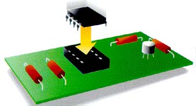
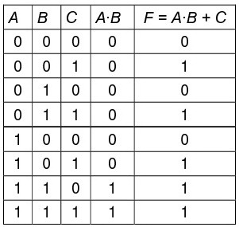

5. Circuitos integrados digitales.
Los circuitos integrados o CI's, se han convertido en el componente más importante de la electrónica moderna y se forman o fabrican con la unión de varios componentes comunes como transistores, diodos, resistencias y hasta condensadores, en un solo envoltorio y configurados ya como un circuito completo (chip).
Al aumentar la densidad y reducir el tamaño al mismo tiempo, se presenta un avance importantísimo en el diseño de circuitos electrónicos.
Usando la misma tecnología de los transistores, con ellos es posible agrupar cientos o miles de componentes en un envoltorio, que es similar en tamaño a un condensador pequeño.
Los circuitos integrados digitales se clasifican por familias. Las más populares son:
- La familia TTL (Transistor-Transistor Logic o Lógica transistor-transistor). Se identifican generalmente con un número o combinación de números y letras. Generalmente su referencia empieza con el número 74 (véase la tabla adjunta). Como, por ejemplo, 7400, 7402, etc.
- La familia CMOS (Complementary Metal Oxide Semiconductor). Se identifican generalmente con el número 4000 y posteriores, como 4001, 4002, etc. Esta familia requiere un manejo especial ya que la electricidad estática del cuerpo humano podría dañarlos al tocar sus terminales.
Cada circuito integrado tiene cierto número de pines o terminales. Es muy importante saber dónde va conectado cada terminal, ya que si se conecta en forma errada se  puede dañar fácilmente.
puede dañar fácilmente.
Para eso se recomiendan los manuales técnicos, como el TTL Cookbook y el CMOS Cookbook, manual de reemplazos ECG o los manuales de los fabricantes.
Se deben tener en cuenta las siguientes consideraciones:
- La ranura y el punto son para localizar el pin #1.
- El terminal o pin #1, esta señalado por el punto que está a la izquierda de la ranura.
- Los pines están numerados en el sentido contrario a las manecillas del reloj en forma de U
- Los circuitos integrados vienen en configuraciones de 8, 14, 16, 18, 20, 24, 40 y 64 pines.
A menudo los circuitos integrados no se sueldan directamente al circuito impreso. Para colocarlos, se pone primero una base en el circuito y luego los integrados se enchufan en las bases.
Circuitos Integrados comerciales con tecnología TTL
{kind=link}
{kind=link}
{kind=link}
{kind=link}
{kind=link}
{kind=link}
Circuitos integrados comerciales con tecnología CMOS
{kind=link}
{kind=link}
{kind=link}
{kind=link}
{kind=link}
¿Cómo se emplean estos circuitos integrados?
Pues bien, imagina que quieres implementar la función  .
.
La tabla de verdad de esta función es la que aparece en la derecha. De ella se deduce que la salida de la función únicamente es cero cuando A = B = C = 0; A = C = 0, B = 1 y A = 1, B = C = 0.
Para "observar" el comportamiento de la función F vamos a montar un circuito electrónico, en el que el encendido de una lámpara indicará un "1" de dicha función. Si la lámpara está apagada, sin embargo, tendremos un "0" de la función.
En la función F tenemos dos operaciones: un producto y una suma lógicos. Por tanto, necesitaremos un C.I. con puertas AND (el 7408) y otro con puertas OR (el 7432).
Para simular las variables A, B y C, emplearemos pulsadores normalmente abiertos (NA) con esos nombres, y seguiremos el convenio utilizado hasta ahora: 0 = desactivado, 1 = activado.
Conectamos los pulsadores A y B, respectivamente, a las patillas 13 y 12 del 7408. Esto efectúa el producto lógico de ambas variables. La salida de esta puerta lógica (patilla 11) se conecta a una puerta del circuito 7432, por ejemplo, en su patilla 9. A la otra entrada (patilla 10) conectamos el tercer pulsador. Con esto, se efectúa la segunda operación (la suma), la cual tenemos disponible a la salida de la puerta OR correspondiente (patilla 8).
No hay que olvidar conectar las correspondientes alimentaciones (VCC) y las masas (GND).

El objetivo de todo diseñador de circuitos lógicos debe ser el conseguir un circuito empleando el menor número de puertas lógicas posibles y, con ello, el menor número de circuitos integrados posible.
Es muy común, sin embargo, emplear sólo puertas NAND (C.I. 7400) o sólo puertas NOR (C.I. 7402), para lo cual hay que transformar la función lógica del sistema mediante procedimientos algebraicos para transformar el aspecto de la función F.
Obra publicada con Licencia Creative Commons Reconocimiento No comercial Compartir igual 4.0